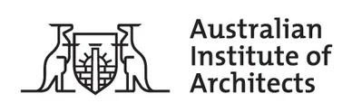

Partners
-
University House
University House hosted Canberra Modern 2017 in its fantastic mid-century setting.
-
Design Institute of Australia
The Design Institute's vision is to raise awareness and increase the profile of the design profession within the community.
-

Australia ICOMOS
The International Council on Monuments and Sites (ICOMOS) is an association of heritage practitioners throughout the world, dedicated to the conservation of the world’s cultural heritage.
-
GML Heritage
For over twenty-five years GML has been at the forefront of heritage consulting. With offices in Sydney and Canberra and a team of over forty industry leaders and experienced professionals.
-
The Mill Architecture and Design
The Mill Architecture and Design is a Canberra based full service design firm specialising in single and multi-unit residential, commercial office, retail fit outs and government space planning with a specialised approach of passive, sustainable design.
-

The Australian Insititute of Architects
The Australian Institute of Architects is the peak body for the architectural profession in Australia, representing 11,000 members.